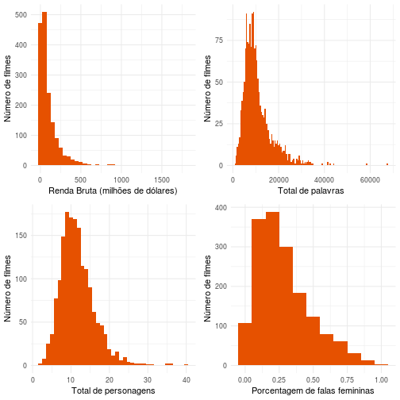
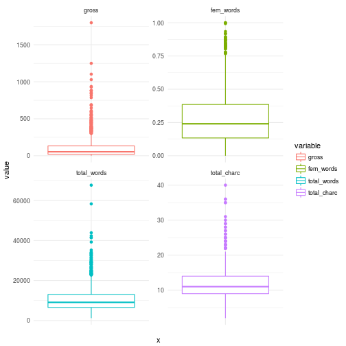
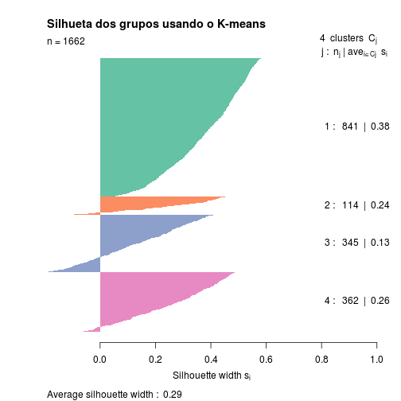
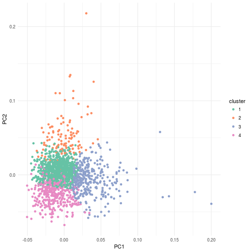
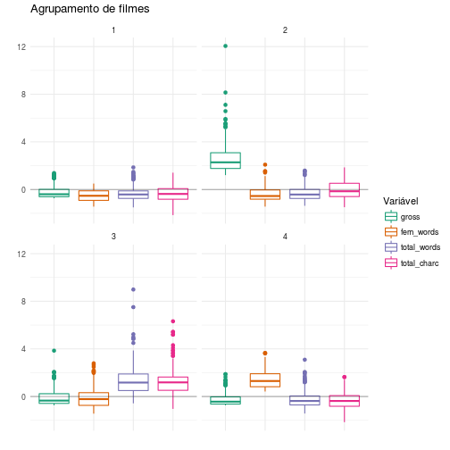
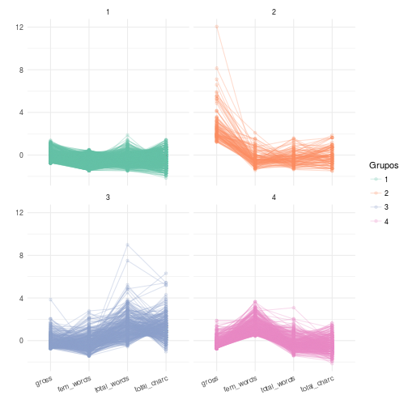

Agrupamento de filmes - Mulheres no Cinema
Sobre os dados
Nesse relatório iremos trabalhar com os dados de filmes que contêm informações sobre a renda bruta do filme, falas de personagens por gênero e outras variáveis. Os dados estão disponíveis aqui.
dados <- read.csv("meta_data7.csv", encoding = "latin1")
characters <- read.csv("character_list5.csv", encoding = "latin1")
A princípio utilizaremos as duas bases de dados disponíveis. A primeira delas contém informações sobre os filmes que iremos estudar. As principais são o ano, a renda bruta na bilheteria (gross) além do título do filme. A segunda base de dados contém informações sobre os personagens de cada filme como o número de palavras ditas no filme, a idade e o gênero.
personagens_filmes <- dados %>%
left_join(characters) %>%
select(c(script_id, title, year, gross, imdb_character_name, words, gender, age)) %>%
filter(!is.na(gross), gender != "?")
Filtramos os filmes que não possuem o valor bruto da bilheteria informado e que também não possuem o valor do gênero.
filmes_summ <- personagens_filmes %>%
group_by(script_id, gender) %>%
summarise(tot_gender = n(),
tot_gender_words = sum(words))
Em seguida, sumarizamos quantas palavras foram ditas por gênero e quantos personagens cada filme tem por gênero.
filmes_words <- filmes_summ %>%
spread(gender, tot_gender_words, fill = 0) %>%
group_by(script_id) %>%
summarise(fem_words = sum(f),
mal_words = sum(m))
filmes_charc <- filmes_summ %>%
spread(gender, tot_gender, fill = 0) %>%
group_by(script_id) %>%
summarise(fem_charc = sum(f),
mal_charc = sum(m))
filmes <- filmes_charc %>%
inner_join(filmes_words, by = "script_id")
A seguir buscamos identficar a porcentagem de palavras ditas por gênero diante do total de palavras do filme.
filmes <- filmes %>%
mutate(total_words = fem_words + mal_words,
total_charc = fem_charc + mal_charc) %>%
mutate(fem_words = fem_words/total_words,
mal_words = mal_words/total_words,
fem_charc = fem_charc/total_charc,
mal_charc = mal_charc/total_charc)
Aqui obtemos as informações de renda bruta (gross) e do título do filme.
filmes.year.gross <- personagens_filmes %>%
distinct(script_id, title, year, gross)
filmes.final <- filmes.year.gross %>%
left_join(filmes, by = "script_id") %>%
select(-script_id)
rm(characters, dados, filmes, filmes_charc, filmes_summ, filmes_words, filmes.year.gross, personagens_filmes)
Variáveis escolhidas
Para o agrupamento final decidi escolher usar as variáveis: Renda Bruta (Gross): valor bruto da bilheteria arrecadada pelo filme. Total de palavras (total_words): total de palavras ditas por todos os personagens do filme. Total de personagens (total_charc): total de personagens do filme. Porcetagem de falas femininas (fem_words): Porcentagens de falas do filme que são de personagens femininas.
filmes.agrupamento <- filmes.final %>%
select(-c(mal_charc, mal_words, fem_charc, year))
A seguir vamos entender melhor como cada variável se comporta nos dados.
p1 <- filmes.agrupamento %>%
ggplot(aes(x = gross)) +
geom_histogram(binwidth = 50, fill = "#E65100") +
labs(x = "Renda Bruta (milhões de dólares)", y = "Número de filmes")
p2 <- filmes.agrupamento %>%
ggplot(aes(x = total_words)) +
geom_histogram(binwidth = 500, fill = "#E65100") +
labs(x = "Total de palavras", y = "Número de filmes")
p3 <- filmes.agrupamento %>%
ggplot(aes(x = total_charc)) +
geom_histogram(binwidth = 1, fill = "#E65100") +
labs(x = "Total de personagens", y = "Número de filmes")
p4 <- filmes.agrupamento %>%
ggplot(aes(x = fem_words)) +
geom_histogram(binwidth = .1, fill = "#E65100") +
labs(x = "Porcentagem de falas femininas", y = "Número de filmes")
grid.arrange(p1, p2, p3, p4, ncol=2)

Nos histogramas acima notamos uma distribuição enviesada para a direita (assimétrica positiva) em praticamente todas as variáveis escolhidas, o que pode indicar que a média dessas variáveis é maior que a mediana.
A seguir iremos olhar os dados dos 1662 filmes e as variáveis escolhidas para esse agrupamento.
filmes.agrupamento %>%
gather('variable', 'value', -title, factor_key=T) %>%
ggplot(aes(x = "", y = value, color = variable)) +
geom_boxplot() +
facet_wrap(~variable, scales = "free_y")

Nessa segunda visualização podemos observar que grande parte dos filmes tem renda bruta inferior a 250 milhões de dólares. Já para a variável da razão de falas femininas pelas falas totais dos filmes temos que a mediana é de r median(filmes.agrupamento$fem_words), ou seja, pelo menos em metade dos filmes estudados as mulheses são responsáveis por falar em 24% do filme. Se tomarmos o 3º quartil temos que r quantile(filmes.agrupamento$fem_words, probs = c(.75))% das falas de todos os filmes são de mulheres em pelo menos 75% dos filmes.
Os dados mostram que há uma divisão desigual das falas entre os gêneros. Não cabe a essa análise julgar o filme por não dividir igualmente as falas entre os gêneros, estamos apenas apresentando como os dados dos filmes são e que possivelmente refletem problemas de uma sociedade que não é igualitária.
Agrupamento
O nosso objetivo com essa análise é obter grupos, considerando as 4 variáveis escolhidas, que façam sentido. Em seguida iremos rotular esses grupos e obter exemplos de filmes de cada grupo.
A técnica utilizada para o agrupamento será o k-means. O k-means é um dos algoritmos mais usados para agrupamento e para usá-lo k-means é necessário definir a quantidade de grupos que devem ser formados e os critérios para que elementos sejam agrupados.
Aplicamos a escala de logaritmo aos dados com o intuito de não considerar os valores absolutos das observações mas sim a grandeza de tais valores.
filmes.log <- filmes.agrupamento %>%
mutate_each(funs(log(. + 1)), -c(title))
Com o objetivo de padronizar as variáveis de forma que cada uma tenha o mesmo “poder” de influência na formação dos grupos, resolvi aplicar a função de scale.
filmes.scaled <- filmes.agrupamento %>%
mutate_each(funs(scale(.) %>% c), 2:5)
set.seed(12346)
km = filmes.scaled %>%
select(-title) %>%
kmeans(centers = 4, nstart = 20)
dists <- dist(select(filmes.scaled, -c(title)), method = 'euclidean')
colors <- brewer.pal(4, 'Set2')
plot(silhouette(km$cluster, dists), col = colors, border = NA, main = 'Silhueta dos grupos usando o K-means')

Quanto maior é a medida da silhouette maior é a homogeneidade em um grupo, ou seja, os filmes de um grupo parecem mais com filmes do próprio grupo do que de outro grupo. A divisão em 4, é o máximo que podemos obter em termos da medida da silhouette e que faça sentido.
Como observado na silhoueta, alguns filmes possuem o valor negativo da silhoueta, o que indica que esses filmes se parecem mais com filmes de outros grupos do que o seu próprio. Uma dos possíveis motivos é que esses filmes encontram-se nas bordas limites dos grupos encontrados pelo k-means, o que faz com que não se encaixem perfeitamente em nenhum grupo.
autoplot(km, data = filmes.scaled) +
scale_color_brewer(palette = 'Set2')

Acima utilizamos uma técnica de PCA para poder visualizar os grupos consideramos as 4 variáveis “condensadas” em apenas duas (PC1, PC2). Novamente, como já falado aqui, existem filmes que ficam nas bordas dos grupos o que faz com que os mesmo não se encaixem em nenhum grupo perfeitamente.
Sobre os grupos
filmes.km <- filmes.scaled %>%
mutate(cluster = km$cluster %>% as.factor)
filmes.km.long <- filmes.km %>%
gather('variable', 'value', -title, -cluster, factor_key=T)
ggplot(filmes.km.long, aes(x = variable, y = value, colour = variable)) +
geom_boxplot() +
geom_hline(alpha = 0.3, yintercept = 0) +
facet_wrap(~ cluster, ncol = 2) +
theme(axis.text.x=element_blank(),
axis.ticks.x=element_blank()) +
labs(title = 'Agrupamento de filmes', x = '', y = '', color = "Variável") +
scale_color_brewer(palette='Dark2')

Aqui é possível identificar os grupos e como as variáveis se comportam em cada grupo.
Grupo 1 - Quase medianos
Quando comparamos esse grupo com os demais notamos que em todas as variáveis, existem uma proximidade com a média do encontrado nos dados. Ou seja, esse é o conjunto dos filmes em que nenhuma variável se sobressai sobre as demais e torna o grupo marcado por essa variável. Alguns filmes desse grupo são bem famosos como: Blade Runner, Birdman (vencedor de Oscar), Fight Club, Ex Machina, Pacific Rim. Todos (estes citados) excelentes filmes por sinal :).
Grupo 2 - Os Sucessos
Nesse grupo se sobressaem os filmes que mais obtiveram “sucesso” nas bilheterias considerando a renda bruta. Com relação as outras variáveis estes filmes se mantêm na média dos outros filmes da base de dados. Alguns exemplos dos maiores sucessos são: Star Wars: Episode IV - A New Hope, Titanic, Avatar, The Jungle Book, The Lion King, The Avengers, Forrest Gump, The Lord of the Rings: The Return of the King dentre outros filmes considerados “blockbusters” e que arrecadaram acima da média dos outros grupos.
Grupo 3 - Os textuais numerosos
Esse é o grupo dos filmes que possui o número total de palavras e o número total de personagens acima da média. Alguns exemplos mais conhecidos desse grupo são The Dark Knight, Se7en, The Wolf of Wall Street, The Godfather: Part II, que são filmes longos e com muitos personagens o que faz sentido uma vez que tais variáveis foram os motivos pelos quais esses filmes ficaram em um mesmo grupo.
Grupo 4 - Girl Power
Esse é o grupo mais interessante formado. Nele estão presentes os filmes nos quais a média da razão número de palavras de personagens femininas pelo total de palavras é superior ao encontrado nos demais grupos. Ou seja, nesses filmes as mulheres falam mais. Cuidado! Não estou dizendo que nesses filmes as mulheres falam de forma igual aos homens, apenas que neles as mulheres falam mais do que nos demais filmes da base de dados. Dentre alguns exemplos conhecidos temos Wild, Carrie, It Follows, Lucy, Pan’s Labyrinth, Begin Again e o meu favorito dessa lista: Her. Um filme que fala sobre relacionamentos, sobre amor, sobre a mente humana e sobre o que nos define enquanto humanos, o filme tem dois protagonistas, um homem e uma mulher, no entanto Ela tem mais falas que Ele.
Esses foram os grupos que encontrei durante a análise espero que tenha gostado e já visto alguns filmes citados aqui.
Abaixo podemos visualizar como cada filme, aqui representado por uma linha, se comporta mediante as 4 variáveis, separados por grupo.
ggplot(filmes.km.long, aes(x = variable, y = value, group = title, colour = cluster)) +
geom_point(alpha = 0.2) +
geom_line(alpha = .3) +
facet_wrap(~ cluster, ncol = 2) +
theme(axis.text.x = element_text(angle = 20, hjust = 1)) +
labs(x= '', y = '', colour = "Grupos") +
scale_color_brewer(palette='Set2')

É possível com essa visualização acima observar que existem alguns filmes que são diferentes dos demais filmes do mesmo grupo. Pelo formato do comportamento das linhas fica claro como cada grupo tem filmes com características diferentes. O formato da linha que liga as 4 variáveis nos mostra como cada filme se comporta em seus respectivos grupos.
library(highcharter)
filmes.agrupamento %>%
mutate(fem_words_round = round(fem_words, digits = 2) * 100) %>%
mutate(cluster = km$cluster) %>%
hchart("scatter", hcaes(x = fem_words, y = gross, group = cluster, size = total_charc)) %>%
hc_add_theme(hc_theme_smpl()) %>%
hc_title(text = "Renda Bruta vs Porcentagem de falas femininas", align = "center") %>%
hc_xAxis(title = list(text = "Porcentagem de falas femininas")) %>%
hc_yAxis(title = list(text = "Renda bruta em Milhões de dólares")) %>%
hc_tooltip(pointFormat = "{point.title} <br> Renda: {point.gross} <br> Total de palavras: {point.total_words} <br> Total de personagens: {point.total_charc} <br> % falas femininas: {point.fem_words_round}")
Nessa visualização acima é possível identificar quais filmes pertencem a cada grupo. Também é possível observar que não existem filmes com mais de 70 % de falas sendo femininas com mais de 500 milhões de dólares, o que chega mais perto é Sleeping Beauty. No tempo em que essa análise está sendo feita Wonder Woman (Mulher Maravilha) acaba de se tornar um dos maiores sucessos de bilheteria de filmes protagonizados por mulheres.
O eixo x é a porcentagem de falas femininas com relação ao total de falas do filme, o eixo y é a renda bruta do filme em milhões de dólares, o tamanho das bolhas nesse gráfico é o número de personagens que um filme tem e a cor é o grupo no qual o filme está. Explore a visualização e tente encontrar filmes que você conhece e descubra informações sobre ele considerando as variáveis estudadas nessa análise.
Sim, falas femininas importam e cada vez mais temos que discutir sobre esse assunto, seja no cinema, nas universidades, na política, em todos os lugares. IGUALDADE. Precisamos mudar o mundo a nossa volta, e os dados podem afirmar isso.
Por hoje é só, até a próxima análise !!!
EXTRA!
filmes.final %>%
mutate(cluster = km$cluster) %>%
group_by(year, cluster) %>%
summarise(fem_words = median(fem_words)) %>%
mutate(fem_words_round = round(fem_words, digits = 2) * 100) %>%
hchart("line", hcaes(x = year, y = fem_words_round, group = cluster)) %>%
hc_add_theme(hc_theme_smpl()) %>%
hc_title(text = "Porcentagem de falas femininas ao longo dos anos por grupo", align = "center") %>%
hc_xAxis(title = list(text = "Ano"), tickInterval = 1) %>%
hc_yAxis(title = list(text = "% de falas femininas")) %>%
hc_tooltip(pointFormat = "Ano: {point.x} <br> % de falas femininas: {point.y}") %>%
hc_legend(title = list(text = "Grupo"), align = "right", verticalAlign = "top",
layout = "vertical", x = 0, y = 50)
Essa visualização nos mostra como ao longo dos anos a mediana da porcentagem de falas de personagens femininas nos filmes se comportou por grupo. É clara a diferença do grupo Girl Power (4) com relação aos demais. Explore a visualização e conheça mais sobre os grupos dos filmes descritos nessa análise. Até mais!